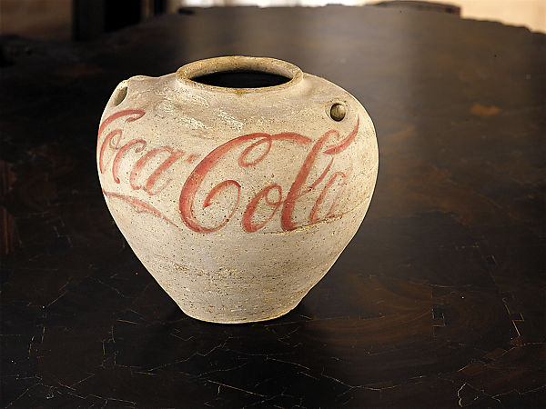

Here Ai Weiwei paints the Coca Cola logo on an ancient Han Dynasty jar. This is a commentary on western influence on China’s culture as a whole. Coca Cola is the epitome of American consumerism. It is a cheap and famous drink that is in fact detrimental to our health but is sold to us nonetheless through aggressive advertising, and it sells well. In that same spirit, is the influence of western culture and ideology beneficial to Chinese society? Or is it just sold to them as a concept in the same way American products are sold worldwide. Is there a strong pressure on China to assimilate similar to the direct etching of a Coca Cola logo on an ancient Han dynasty jar? As if the logo being bluntly branded on the jar was an attempt to modernize it?

Han Jar Overpainted with Coca-Cola Logo. Ai Weiwei. 1995.